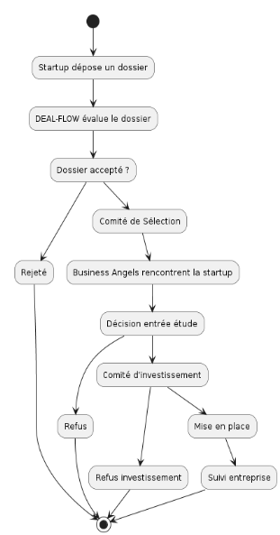
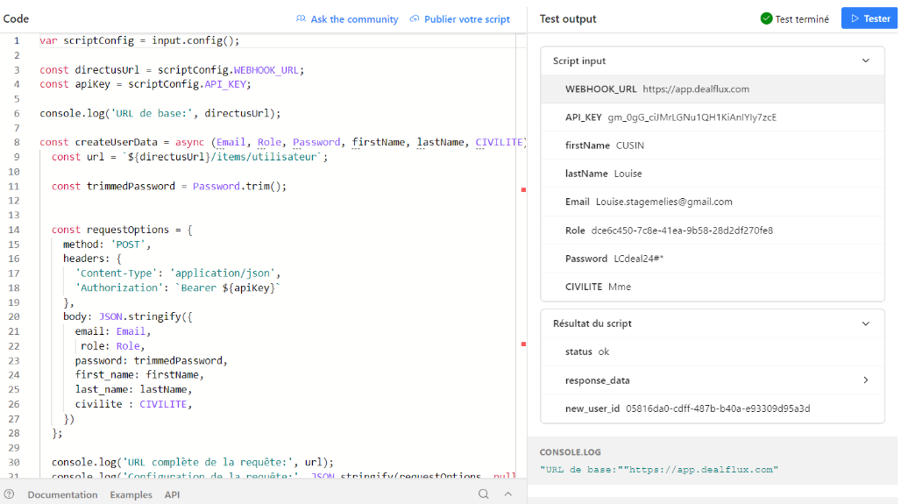

Stage BUT 3 - MELIES Business Angels
Contexte du stage
Stage de 10 semaines au sein de MELIES Business Angels, une association qui accompagne les startups dans leur levée de fonds.
Missions principales
- Optimisation d'Airtable : Finaliser et optimiser la base de données Airtable
- Développement d'interfaces entre Airtable et Dealflux
- Synchronisation des données entre les deux systèmes
- Documentation du SI pour les utilisateurs
- Tests et débogage du système
Réalisations et résultats
Conception de la solution de synchronisation
- Analyse approfondie des schémas de données d'Airtable et Deal-Flux
- Normalisation des formats de données pour assurer la compatibilité
- Modélisation UML : diagrammes de flux, cas d'utilisation, séquence

Développement du système de webhook
- Configuration des webhooks dans Airtable pour chaque événement à synchroniser
- Création d'une API Airtable personnalisée sécurisée
- Développement de scripts JavaScript pour les requêtes POST et PATCH
- Utilisation de Directus pour optimiser la gestion des API REST

Tests et validation
- Tests unitaires des composants du système
- Tests d'intégration simulant différents scénarios de synchronisation
- Tests de robustesse dans des conditions d'erreur
- Tests utilisateurs avec l'équipe MELIES Business Angels
Compétences du BUT travaillées durant le stage
- Compétence 1 (niv. 4) - Réaliser un développement d'application : Conception d'une solution robuste de synchronisation pour gérer les mises à jour concurrentes et assurer l'intégrité des données via un système de versioning.
- Compétence 2 (niv. 3) - Optimiser des applications informatiques : Optimisation des performances du système de synchronisation avec mise en cache et traitement par lots pour réduire la charge sur les APIs.
- Compétence 3 (niv. 3) - Administrer des systèmes informatiques communicants complexes : Déploiement et maintenance du système de synchronisation. Approche de test pour assurer la fiabilité et robustesse dans diverses conditions d'utilisation.
- Compétence 5 (niv. 3) - Conduire un projet : Gestion du projet de synchronisation de bout en bout. Identification des besoins métiers, conception, développement, tests, documentation utilisateur et livraison.
- Compétence 6 (niv. 3) - Collaborer au sein d'une équipe informatique : Intégration dans l'équipe de MELIES Business Angels. Communication régulière avec différentes parties prenantes durant le projet.
Télécharger le rapport de stage complet